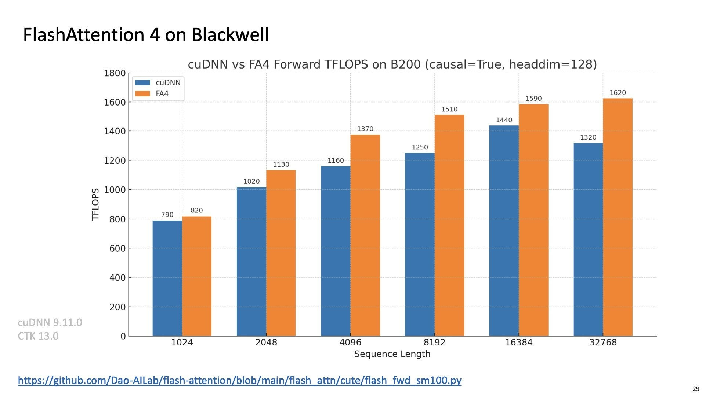
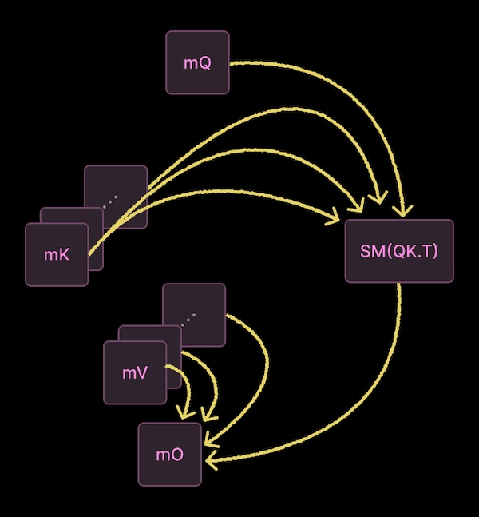
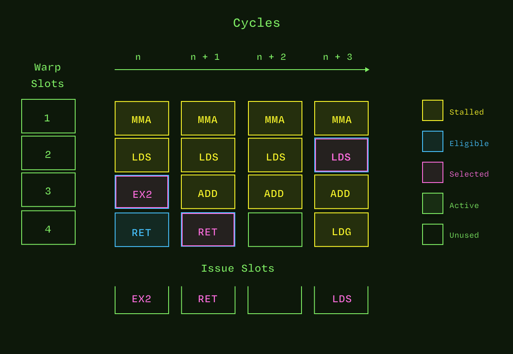
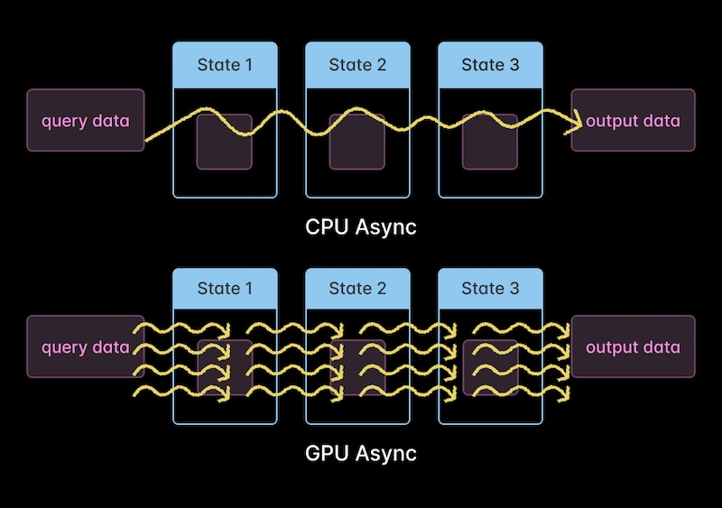
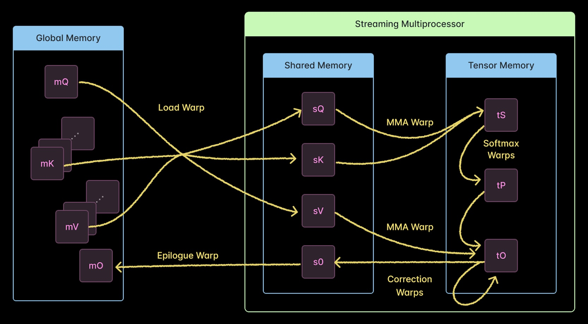

This blog post made the front page of HackerNews! Discussion here .
This blog post was presented to the GPU MODE Discord ! Watch the recording here .
One month ago at Hot Chips , Tri Dao presented preliminary results on Flash Attention 4, the latest addition to the Flash Attention series of CUDA kernels . These kernels are used in the attention layers of Transformer neural networks. Along with more standard matrix multiplications, these calculations are the primary bottlenecks in contemporary generative AI workloads. Billions of dollars and gigawatts of power are being expended on GPUs to run more of these calculations faster. And Flash Attention 4 is the way to run lots of them as fast as possible. This blog post explains how it works.
The new FA4 kernel is optimized for Nvidia’s new Blackwell Streaming
Multiprocessor architecture and achieves a reported ~20% speedup
over the previous state-of-the-art, the attention kernels in Nvidia’s cudnn
library.

cudnn kernels are closed source, so Jensen only knows
what’s going on in there.
There’s also no official technical report on how FA4 works yet. But the source code for Flash Attention 4 was already released online here . We’ve recently been contributing to open source LLM inference engines, so we read the code and reverse-engineered how the kernel works, including two math tricks (faster approximate exponentials and a more efficient online softmax) that are classic Dao. This write-up contains our findings.
Perhaps surprisingly, the architecture of FA4 is readily understandable by a general software engineering audience.
That’s because the biggest change in FA4 isn’t the (very cool) math — it’s a massive increase in the complexity of its asynchronous “pipeline” of operations. This kind of asynchronous programming is fairly new in the world of CUDA, but pipes have been in Unix for like 40 goddamn years . A programmer who has experience with parallel and concurrent programs, like high performance databases and web servers, will feel right at home (absent some novel GPU technical vocabulary).
So we organize our write-up into two parts.
The first section, a “quick tour”, covers the architecture of FA4 by tracing what happens as a block of inputs is turned into a block of outputs. It is written to be understandable by a practicing software engineer without any CUDA programming experience. We give brief explanations of CUDA concepts and hardware, like warps and warp schedulers, but defer detailed explanation to our GPU Glossary (linked throughout).
The second section, a “deep dive”, walks through each of the subcomponents in turn, explaining what each does, supported by links to the source code for particularly intrepid spelunkers.
A quick tour of Flash Attention 4: The “Life of a Tile”
We start with bf16 tensors of queries, keys, and values in global memory (aka GPU RAM). We’re aiming to produce a tensor of bf16 outputs, also in global memory. Outputs are values weighted by the similarity of queries to keys. Computing this weighting requires matrix multiplication, exponentiation, and normalization.
Like the good engineers we are, we tackle this very big problem by breaking it down into smaller pieces. That’s fairly literal in this case: we take our very large input tensor and split it up into “tiles” of adjacent rows and columns, each of which contribute to the calculation of one tile of outputs.
Specifically, one running instance of our kernel program (namely, one “cooperative thread array” of threads) produces two tiles of the outputs tensor by reading two tiles of the queries tensor. In between, it streams all of the keys & values for each query tile. Keys and values are also read in tiles. If you’re a database ‘head, you might think of it as a vectorized sequential scan for a batch of aggregation queries against a key-value store.

By running this tile-level program many times concurrently (typically, massively in parallel), we produce the entire outputs tensor. This is a “single program, multiple data” execution model, where each datum is a pair of tiles. This kind of concurrency across program instances is the bread-and-butter of the CUDA programming model and is transparently handled for the programmer by the CUDA runtime.
But with the fastest contemporary kernels, like Flash Attention 3 & 4 and all state-of-the-art matrix multiplications, there is also concurrency within our program. Each program instance sets up an asynchronous pipeline of operations that together effect the tile-level computation depicted above. We write our kernel such that all of our pipeline steps can run as concurrently as possible as we process a tile. In Flash Attention 4, we achieve this by mapping chunks of our pipeline onto 32-thread groups called warps (a technique called warp specialization).
We then rely on the warp schedulers to switch between pipeline steps within program instances on each clock, swapping out when a step stalls and swapping back in when a step’s next input is ready. Think simultaneous multithreading /“hyperthreading” from CPUs, but on steroids. The diagram below, from our GPU Performance Glossary, depicts four cycles across four parallel slots, for a total of sixteen execution slots, fifteen of which are filled with warps actively executing instructions thanks to this rapid warp switching. See the associated article for details.

This execution model is “dual” to the way that an asynchronous program for CPUs works in the following sense. In an async CPU program, a single thread implements the entire journey of a single datum (e.g. request) through a state machine (e.g. Reading, Parsing, Writing), switching between transitions as data become ready. In an async GPU program like FA4, a single warp implements a single transition (e.g. from queries and values to attention scores) in a similar state machine.

The pipeline is organized with a producer/consumer model and uses barriers for synchronization.
Unlike the concurrency across program instances, the internal pipeline concurrency is all implemented manually. This leads to quite gnar code — though the control flow will look familiar to anyone who has written their own event loop .
So like most async code, the FA4 kernel is best understood by tracing the path of a single tile: the “life of a tile”, akin to the “life of a pixel” in a browser’s rendering pipeline . In particular, let’s follow the tile’s path through the memory hierarchy of the GPU as it is transformed from initial query tile to final output tile.
At a high level, and eliding a few details about multiple buffering that increase concurrency and parallelism, that looks something like this:

Which vaguely resembles a microservices diagram . As above, so below!
Spelled out, that’s:
- A tile of queries is loaded from global memory (
mQ) into shared memory (sQ) by the Load warp. Shared memory is a “scratchpad” L1 cache managed by the programmer. - Tiles of keys (
mK) and values (mV) are streamed into shared memory (sK,sV), also by the Load warp. Note that if the working set size permits, future loads of these tiles for other query tiles will be serviced from the hardware-managed L2 cache (not pictured). - When each tile of keys is ready, the MMA warp multiplies it with our
tile of queries using a Tensor Core, producing a tile of unnormalized
attention scores in Tensor Memory (
tS). Tensor Cores are single-purpose hardware for running matmuls. Tensor Memory is another programmer-managed L1 cache designed to hold and accumulate intermediates during sequences of Tensor Core operations. - When each tile of unnormalized attention scores is ready, a Softmax
warp produces normalized attention scores for that tile in Tensor Memory
(
tP) without using the Tensor Core and updates a scaling factor used for numerical stability (in shared memory, not pictured).- ⚡️ New in Flash Attention 4: this step can use CUDA Cores instead of Special Function Units (SFUs) to perform the exponential step of the normalization. SFUs are intended to provide hardware acceleration for transcendental operations like exponentials. But there are far fewer SFUs than CUDA Cores, which can lead to queueing. The basic idea, fast software exponentiation for neural networks, was proposed in a 1999 Neural Computation paper by Schraudolph , but the implementation here is quite different, involving a cubic polynomial approximation to match the hardware precision (as described in detail below).
- When each tile of normalized attention scores is ready, a Correction
warp checks if the normalization scaling factor has changed and, if
necessary, rescales the final output tile in Tensor Memory
(
tO).- ⚡️ New in Flash Attention 4: the choice of when to rescale became much smarter, reportedly cutting down on output rescaling operations by a factor of 10. Roughly: the scaling factor used to be a simple running maximum. Now updates are applied only when the maximum has changed enough to impact numerical stability. This seems like a good, and very portable, idea.
- When each rescaling update finishes, the MMA warp updates the output
tile in Tensor Memory (
tO) by accumulating it with the value tile (sV) scaled by the attention score tile (tP). - When each tile of final output values is ready, the Correction warp
stores it in shared memory (
sO), then the Epilogue warp stores it in global memory (mO), and we’re done with that tile.
Our high-level, tile-centric view elides a number of details, like the number of warps assigned to each pipeline step and the use of buffers to store different tiles. It also leaves out all of the details of the barrier synchronization, which is required on both sides of every producer/consumer relationship (aka where an arrow tip meets an arrow tail in the diagram). These are critical for performance.
We go through these details in a “warp-centric” view of the kernel below, which focuses on the operations in each warp, rather than the movement of tiles, and includes links to the source code. This is necessarily more technical and goes through some GPU-specific features at higher speed, so it’s less suitable for a general software engineering audience.
But before that, one last takeaway for those only interested in the high level.
Where does GPU programming go from here?
When
Ian Buck
and others designed CUDA C, they were driven by
a north star: can it be used to write a single precision vector addition
(saxpy) with respectable performance as a clean one-liner
that’s easily understood by a C programmer? The core of the CUDA programming model laid
down then and described in the
2008 Lindholm et al. paper
still persists today.
What’s new in the last few years (in the Hopper and Blackwell architectures) is an increasing reliance on programmer-managed asynchrony, like FA4’s multi-stage, multi-buffered pipeline. This represents a major jump in complexity from FA3’s simpler “ping-pong” pipeline ( added to take advantage of Hopper GPUs’ async capabilities ).
And just as in other well-designed languages , CUDA C/C++ has struggled to accommodate the introduction of asynchrony. It is a truth universally acknowledged that async programming sucks absolute ass . That’s especially true when you need to manage your own event loop, as we’re effectively doing here. And it’s made harder, not easier, by the thread-centricity and warp uniformity of the CUDA programming model and PTX machine model.
No wonder the Triton team gave up on writing Blackwell attention and added the new Gluon frontend at a lower level!
Triton’s troubles notwithstanding, this kernel is a clear instance of the swing towards tile-based, warp-specialized programming. And Nvidia is betting big on a number of new languages and libraries to try to make this easier, from the CuTe DSL and CUTLASS C++ used in this kernel to the forthcoming CuTile . Say what you will about the chatbot hype wave, these are exciting times for high performance numerical computing!
Deep dive for the GPU enjoyers: What does each warp do in Flash Attention 4?
There are five different specializations for warps in the Flash Attention 4 kernel. They are listed below, along with links to their source code.
- A Load warp to load query, key, and value tiles from global memory into shared memory
- An MMA warp to compute unnormalized attention scores from query and key tiles and accumulate score-weighted value tiles into the output tiles
- Eight Softmax warps to compute normalized attention scores and track running stats (max, sum)
- Four Correction warps to watch for updates to the normalization scale and re-normalize the output tiles
- One or two Epilogue warps to store completed output tiles from shared memory into global memory
In the above discussion, we implied that each CTA works on just two
query tiles and produces just two output tiles. That’s true in some
settings, but the mapping between tiles and CTAs is technically
abstracted by a
TileScheduler
. For the best performance, you need to use the
StaticPersistentTileScheduler
, which launches
at most one CTA per Streaming Multiprocessor
and then schedules tiles onto those SMs. This reduces CTA launch
overhead and allows for more fine-grained concurrency (e.g. overlapping
Epilogue warps for one tile with the Load and MMA warps for the next
tile).
The core work of the kernel is the same — there’s just not a clean
mapping of work onto thread constructs, which makes explaining the work
harder. From here, we’ll go back to speaking about the code as though
each CTA handles only two tiles (which is literally true if you use the
SingleTileScheduler
).
Also, from here we will start using some shorthand, matching the code and convention: Q for queries, K for keys, V for values, O for outputs, S for unnormalized attention scores, and P for normalized attention scores/“probabilities”.
The Load warp loads two Q tiles and streams all K and V tiles.
The Load warp operates on pointers to Q, K, and V tensors in global memory and writes to Q, K, and V tensors in shared memory . It supports paged keys and values (as in Paged Attention , not as in operating system pages) via an optional “page table” tensor (again, not the page tables co-managed by the OS, the CPU, and the MMU).
It uses the Tensor Memory Accelerator (TMA) to reduce register pressure from multidimensional array access and fire off copies asynchronously . This also avoids very long warp stalls on loads that would require even more warp specialization to hide latency.
The Load warp loads two Q tiles . It loads all K and V blocks in a loop . It is the ” producer ” of these tiles (in a producer/consumer setup). It can concurrently load up to three blocks each of K and V .
As it completes these loads, the Load warp signals their completion to the MMA warp through an array of barriers in shared memory . All barriers (not just for Load/MMA synchronization) are referenced via their offset in this array to support variable barrier counts with different configuration settings.
The MMA warp computes unnormalized attention scores and output values.
The MMA warp operates on pointers to Q, K, and V tensors in shared memory . For every K/V tile, it runs two matmuls to create S tiles and two matmuls for O (Q/K for the S tiles, P/V for the O tiles). The matmuls are emitted as inline PTX assembly , as is necessary for CUDA C/C++ programs to use the Tensor Cores in Hopper and Blackwell. The vast majority of the FLOPS in this kernel are driven by these lines; most everything else is memory management.
The specific PTX instruction used is
tcgen05.mma.cta_group::1. mma is
matrix-multiply-accumulate. tcgen05 means 5th
generation tensor core, aka Blackwell, as in
sm100/Compute Capability 10.0.
cta_group::1 means we run our matmul using only a single
CTA, avoiding the nastiness of TPC-based 2SM/2CTA matmuls
available in Blackwell
. This likely introduces a small memory throughput penalty but
simplifies CTA/tile scheduling. Interestingly, the
ThunderKittens Blackwell attention kernel
makes a different choice.
Also on the front of scheduling/simplification: only a single
leader_thread issues the instruction. And we’re only
working from a single warp. This is an important difference from
performant Hopper MMAs, which were coordinated across an entire warpgroup.
After getting hold of a Q tile and our first K tile, we run our first matmul to produce our first result for S. Then we loop over the remaining K and V tiles and update S and O. These S and O tensors live in Tensor Memory. This is the “intended” use of Tensor Memory, as a store for accumulators read from and written to by the Tensor Cores.
Since the K and V tiles are buffered, we need to signal the Load warp every time we finish using them (eg here , signaling that the memory containing V can be reused once it has been used to construct the second O tile). There’s some additional coordination here (around S, P, and O), which we’ll discuss as it comes in up in the other warps.
Eight Softmax warps produce normalized attention scores.
The Softmax warps produce normalized attention scores (P, as in “probabilities”) consumed by the MMA warps. Ignore the name and don’t try to come up with an interpretation of the attention scores as the probability distribution for a random variable; it’ll make your head hurt and give you bad intuition about Transformers. They’re better thought of as weights for a linear combination of vectors from V.
The core softmax operation is implemented by two warpgroups , aka eight warps. The two warpgroups are mapped onto the two query/output tile workstreams. Warpgroups are made up of four adjacent warps with a warp index alignment of four. Using them was critical for the fast warpgroup MMAs in Hopper GPUs, as in Flash Attention 3 , but we didn’t see anything in this kernel that made explicit use of them. Warpgroup alignment may lead to more even distribution of work across warp schedulers/subunits of the SM, as it did in Hopper, which had four warp schedulers per SM. To our and Wikipedia’s knowledge, this level of detail on SM100 Blackwell GPUs like B200s is not published anywhere (but it is true of SM120 RTX Blackwell GPUs ).
We’re also not certain of the reason why some pipeline stages are assigned more warps than others and in this particular ratio. Presumably, it helps ensure balanced throughput across the different stages, but our napkin math on relative operational load, bandwidth, and latency between the matmuls and the attention operations didn’t produce a smoking gun. We speculate that it was determined by benchmarking.
Each warp runs a single step of the online softmax calculation at a time while looping over the S tiles produced by the MMA warp .
Looking within the individual softmax step : the unnormalized attention scores are stored in Tensor Memory, which can only be directly operated on by the Tensor Cores. But the Tensor Cores can only do matrix multiplication. So the Softmax warps have to copy the scores into the registers to apply the exponentiation and then copy the result back .
The exponentiation is done differently than in previous versions of
Flash Attention. FA3 and earlier used the GPU’s Special Function Units
to perform a hardware-accelerated exponentiation. Specifically, they use
the exp2 CUDA PTX intrinsic, which is typically
mapped by the (closed-source) ptxas compiler to the
MUFU.EX2 SASS instruction
.
The FA4 kernel does that too, but for
smaller attention head sizes
it
additionally mixes in a different exponentiation algorithm on some
iterations with a tunable frequency
. That implementation uses
this block of inline PTX
to compute 2 ** x. The algorithm splits the
exponentiation into two parts: the easy integer part
(2 ** floor(x)) and the hard rational part
(2 ** (x - floor(x))). It uses a cubic polynomial to
approximate 2 ** x on the unit interval (check out the
approximation on Wolfram Alpha
here
). This approximation matches the output of the SFUs for
bf16 values.
The cubic polynomial calculation is done, following Horner’s method
for linear time polynomial evaluation, with three fused multiply-adds
(fma):
// Horner's method: (((c3 * r) + c2) * r + c1) * r + c0
fma.rn.ftz.f32x2 l10, l9, l6, l5
fma.rn.ftz.f32x2 l10, l10, l9, l4
fma.rn.ftz.f32x2 l10, l10, l9, l3
Note that f32x2 means that we operate on a vector (as in
vector lanes
) of two 32 bit values. You can read about a similar implementation
for CPU vector instructions on Stack Overflow
here
.
In addition to only applying this method on some iterations, it stops applying it on a configurable number of the last S tiles . Together, these suggest that the reason for applying it is to avoid a bottleneck on the SFUs (which, due to wave quantization effects , is less relevant for the final tiles).
The Softmax warps also track the running statistics for rescaling and normalizing attention scores used by the Correction warps, as discussed below.
There’s another important change here. All softmax algorithms need to handle numerical instability caused by exponentiation of large values . Before Flash Attention, this was usually done by finding the largest value in each row and subtracting it from the value before exponentiating. All Flash Attention kernels use a streaming or online softmax algorithm, and the largest value is not known in advance — searching through the scores to find it would defeat the purpose of using a streaming algorithm! Instead, they use a running maximum for numerical stability and update the scaling factor whenever a new maximum is encountered. This ensures continued numerical stability and avoids an extra scan, but requires a costly correction of previous values (handled by the Correction warps) every time a new maximum is observed.
This is inefficient. We only need to update the scaling factor when the new maximum changes enough to threaten numerical stability, not every time a new maximum appears. That logic is implemented here . In the Hot Chips talk, Dao indicated that this reduced the number of corrections by a factor of 10.
There is additional support for attention sinks and storing the log-sum-exp tensor used in the backwards pass. At time of writing in late September 2025, a backwards version of this kernel is not available, but is expected imminently.
Four Correction warps rescale previous outputs as the normalization changes.
The Correction warps update past output results from the MMA warps as the numerical stability scaling factor changes . The Correction warps need to coordinate their access to the O values in Tensor Memory with the MMA warps (eg here , indicating that those values are consumed and the memory can be reclaimed).
Like the Softmax warps, the four Correction warps form a warpgroup. Also like the Softmax warps, they need to load from Tensor Memory to registers to apply their non-matmul rescaling operation .
The Correction warps are also responsible for writing the output from
Tensor Memory to shared memory and applying the final scaling by the row
sum. This is
called the correction_epilogue
. “Epilogue” here means the same thing as in the name of the
“Epilogue” warps — an operation that occurs at the end of a sequence of
operations on values stored in one memory and before the results are
written to another memory. But in this case, it refers to operations on
data in Tensor Memory before they are stored to shared memory, whereas
the Epilogue warps take data from shared memory and store it in global
memory.
This is especially confusing because the completion of this epilogue is the signal for the Epilogue warps to start their work.
The Correction warps have the global memory output tensor among their arguments , but only use it in commented-out code.
The Epilogue Warp(s) store complete output tiles back into global memory.
There are either one or two Epilogue warps depending on whether the TMA is enabled .
In the case that the Epilogue warps can use the TMA , there’s only one and its work is simple. It waits on the correction loop to finish for an output tile , then runs a TMA copy , then signals that it has finished reading the O tensor in shared memory and the buffer can be reused.
If they can’t use the TMA , their work is more complicated — they need to handle slicing and packing , which is pretty hard . It also consumes quite a few more registers .
If you made it this far, you might enjoy working at Modal.
At Modal, we’re building the cloud infrastructure that compute-intensive workloads like giant Transformers need. Our platform is used by companies like Suno, Lovable, Ramp, and Substack. We’re hiring.
The authors would like to thank Simon Mo of vLLM, Michael Goin of RedHat AI, and Kimbo Chen of SemiAnalysis for their comments on drafts of this article. We’d also like to thank Tri Dao for writing another banger of a kernel.